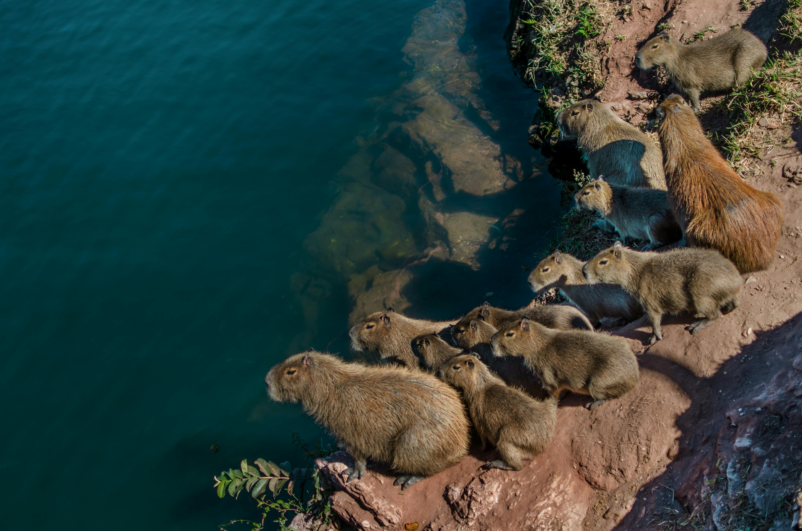

My favourite mammal
Capybara

The capybara or greater capybara (Hydrochoerus hydrochaeris) is the largest living rodent, native to South America. It is a member of the genus Hydrochoerus.
- characteristics
- Length 106-134cm.
- Height 50-62cm.
- Weight 35-66kg
habitat
- lakes
- rivers
- marshes
- mangroves

Ir ao index
Capibara Wiki